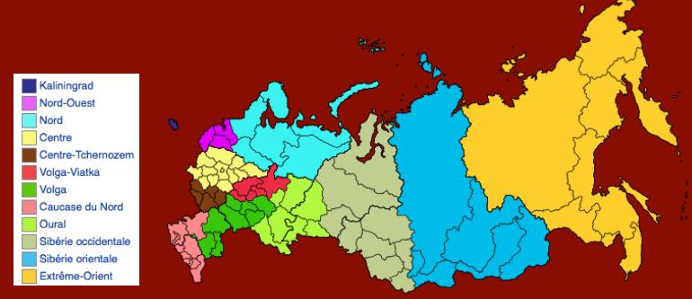
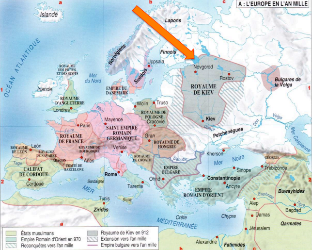
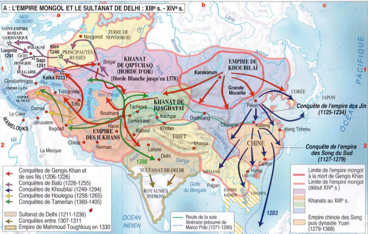

Fiche Culture Russe ✏️
Geographie de la Russie
- La géologie, le climat, la faune et la flore
Le territoire de la Russie
Un huitième des terres émergées, le plus grand pays du monde (avant le Canada, la Chine, les Etats-Unis et le Brésil). 17 098 246 km2 (hors Crimée, dont l’annexion, en 2014 n’est pas reconnue par la France)
En pourcentage du territoire:
- 45 % forêts
- 4 % eau
- 13 % terres agricoles
- 19 % autres terres
Du nord au sud: entre 2500 et 4000 km / D’ouest en est: 9000 km Point le plus occidental : l’enclave de Kaliningrad Point le plus oriental: île Ratmanov (dans le détroit de Béring) Point le plus méridional: frontière avec l’Azerbaïdjan Point le plus septentrional: archipel François-Joseph dans la mer Glacial
Les frontières
58 562 km de frontières, dont seulement 14 309 km de frontières terrestres. Frontières communes avec la Norvège, la Finlande, l’Estonie, la Lettonie, la Lituanie, la Pologne, la Biélorussie, l’Ukraine, la Géorgie, l’Azerbaïdjan, le Kazakhstan, la Chine, la Mongolie et la Corée du Nord.
L’enclave de Kaliningrad
Elle est Russe depuis la défaite allemande en 1945. À la suite de l’adhésion de la Pologne et de la Lituanie à l’UE, devenue une enclave russe au cœur de l’UE; depuis juillet 2003, par l’accord de Schengen, des frontières extérieures de l’UE.
Autres points sensibles du territoire russe
Demandes russes auprès de l’ONU de reconnaître au territoire russe une partie de l’Arctique. Différend avec le Japon sur les îles Kouriles. L’annexion de la Crimée, région multiethnique, arrachée à l’Ukraine par la Russie en mars 2014 (massivement reconnue par la populaCon dans un référendum… mais qui n’est pas reconnu par la communauté internationale).
Les fuseaux horaires
Heure de Moscou comme référence (rendue obligatoire par l’étendue du réseau ferroviaire) Depuis 2014, nouvelle division en 11 fuseaux qui suivent le tracé des régions de la Fédération de Russie. Par région, un seul fuseau horaire, mais exceptions: 3 fuseaux pour la Iakoutie, deux pour Sakhaline. Depuis 2011, heure d’été permanente a été instaurée.
Les fuseaux :
- Heure de Kaliningrad (KALT) (UTC + 2)
- Heure d’Irkoutsk (IRKT) (UTC + 8)
- Heure de Kaliningrad (KALT) (UTC + 2)
- Heure Iakoute (YAKT) (UTC + 9)
- Heure de Samara (SAMT) (UTC + 4)
- Heure de Vladivostok (VLAT) (UTC + 10)
- Heure d’Ekaterinbourg (YEKT) (UTC + 5)
- Heure Magadan (MAGT) (UTC + 11)
- Heure d’Omsk (OMST) (UTC + 6)
- Heure du Kamtchatka (PETT) (UTC + 12)
- Heure de Krasnoïarsk (KRAT) (UTC + 7)
Le climat
Cinq zones en fonction du sol, de la flore et de la faune :
- La toundra (extrême nord du pays), 15 % du territoire de la Russie; hiver prolongé et rigoureux, été court et frais; permafrost; végétation pauvre (terre tourbeuse, mousse)
- La forêt / la taïga (située au sud de la toundra, ligne Moguilev-Tambov-Novossibirsk); au nord une zone de conifères, la taïga, plus au sud la forêt mixte
- La steppe (plaines des Carpates à l’Altaï), végétation herbacée, 12 % du territoire – fleurie au printemps, sèche en été
- Zone des déserts (sud-est de la Russie d’Europe, vers la mer Caspienne) pauvre en végétaCon et en faune, climat sec
- Climat subtropical (nord-ouest du Caucase, bassins de l’Amour et de l’Oussouri): végétaCon luxuriante
D’une manière générale: différence très marquée entre les températures en été et en hiver. Région la plus froide: Sibérie, Pôle froid de l’hémisphère nord: près de Verkhoïansk (jusqu’à -62 °C en hiver), en Kalmoukie, jusqu’à + 45,4 °C mesurés en été.
Le relief
Plus grande partie: plaine d’Europe orientale; plaines septentrionales du Caucase, plaine de la Sibérie occidentale (derrière l’Oural, en Asie). Au sud-est de la plaine de Sibérie occidentale: les monts de l’Altaï. Sur la presqu’île de Kamtchatka (Extrême Orient), plus de 160 volcans, dont le mont Klioutchevskaïa (4750 m), le plus haut volcan d’Eurasie en activité. Entre l’Ienisseï et la Léna, le plateau de la Sibérie moyenne; entre la Léna et l’océan Pacifique, les chaînes et les plateaux de l’Asie du Nord-Est.
- La population et le ethnies
La population officielle est de 145 millions en 2018. Contenant plus de 180 ethnies differentes dont 77,71% de Russes. La langue nationale est le Russe mais il y a aussi plus de 100 autres langues parlees mais il y a une russification systematique depuis les temps de l’URSS. Éducation en russe partout, mais selon les régions en partie en langue régionale. Par ailleurs, il y a de nombreux représentants d’autres pays (Allemands, Bulgares, Finnois…), et de nombreux migrants venant pourle travail, les gastarbeiter notamment originaire d’anciennes républiques soviétiques. Il y a aussi une presence chinoise en Siberie Orientale.
Nombreuses ethnies conservant leur mode de vie traditionnel, notamment dans le Grand Nord et en Sibérie: les Evenks, les Tchouktches, les Nénètses (Samoyèdes), Samis, Aléoutes…
- Les religions
Officiellement, l’Etat russe est laïque et garantit à tous ses habitants la liberté de choisir une religion. La majorité de la population se déclare aujourd’hui orthodoxe (environ 63 %)
La religion orthodoxe
En 988, le grand-prince de Kiev Vladimir Sviatoslavitch reçoit le baptême selon le rite byzantin, il impose la religion chréCenne à son peuple. En 1054: schisme (Eglise de Rome, Eglise de Constantinople) => apparition de la religion orthodoxe. Grand rôle de la christanisation du pays dans l’affirmation de l’Etat russe, le développement de l’instruction la constitution des bases spirituelles et morales du peuple – aussi dans l’expansion de la Russie.
1299: transfert du siège métropolitain de Kiev à Vladimir, en 1328 à Moscou (jusqu’à nos jours). Et jusqu’à aujourd’hui: Moscou reconnue comme la « Troisième Rome » avec une mission, sauver la Chrétienté.
Place des icônes, qui représentent les saints selon des règles très strictes, dans le rituel orthodoxe. Pas d’instruments de musique, seulement les voix dans les églises.
Les autres religions présentes en Russie
Deuxième religion d’après le nombre de fidèles: l’islam (Tatars, Bachkirs, Tchétchènes, Kazakhs…), présent en Russie depuis le XIIe siècle; coexistence sans problème majeur avec l’orthodoxie, Il y a actuellement environ 20 milllions de musulmans en Russie.
Présence de communautés judaïques, notamment dans les grandes villes. Région autonome juive en Sibérie orientale, Birobidjan, mais très peu de juifs de nos Jours. D’une manière générale, la part des juifs dans la population est très réduite depuis les années 1990.
Grand nombre de bouddhistes, surtout de la branche lamaïque, Religion traditionnelle des Bouriates, des Touvains, des Kalmouks. Plus grand centre: le datsane d’Ivolguinsk en Bouriatie, près d’Oulan Oudé.
Les religions dans la Russie du XXe siecle
Époque soviétique: athéisme comme composante importante de l’idéologie communiste. Années 1920-1930: destruction d’innombrables églises dans le pays. Athéisme belliqueux s’adoucit un peu à partir des années 1940. Mais seulement avec la pérestroïka (1985-1991), l’hostilité s’affaiblit. Fin de l’URSS: réouverture et reconstrucCons; liberté de croyance.
- Le Folklore
Le folklore s’est constitué sur la base des croyances païennes, avec des divinités anciennes, comme Peroun (dieu de la foudre), Svarog (dieu du feu céleste), Dajbog (dieu de la fertilité), Volos (dieu du bétail). Les bylines: chansons de geste sur les hauts faits des bogatyrs (héros réalisant des prouesses à caractère patriotique ou religieux), dotés d’un pouvoir magique. Parmi les plus populaires: Ilya Mouromets, Dobrynia Nikititch, Aliocha Popovitch (héroïques défenseurs de la terre russe).
Contes de fée, décrivent des personnages imaginaires dotés de qualités magiques; p.ex. Baba Yaga (la sorcière), Jar-PCtsa (l’Oiseau de feu), Ivan Douratchok (Ivan le Nigaud)… Cours premier semestre Madame Boskovitch
- Les villes russes
Il y a 113 grandes villes en Russie, dont 15 comptent plus d’un million d’habitants :
- Moscou
- Saint-Petersbourg
- Novossibirsk
- Ekaterinbourg
- Nijni-Novgorod
- Kazan
- Tcheliabinsk
- Omsk
- Samara
- Rostov-sur-le-Don
- Oufa
- Krasnoïarsk
- Perm
- Voronej
- Volgograd
La majorité des villes situées en Europe, mais aussi de grands centres en Asie. Villes sibériennes souvent très jeunes :
- Tobolsk (autre fois la capitale de la Sibérie) fondée en 1587
- Ekaterinbourg, fondée en 1723
- Novossibirsk, fondée en 1893
Les deux capitales
On parle de « deux capitales », Moscou et Saint-Pétersbourg. Saint-Pétersbourg, fondée en 1703 par Pierre Ier, remplace Moscou comme capitale jusqu’à la Révolution russe (redevient capitale en 1918). Saint-Pétersbourg est toujours considérée comme la capitale culturelle de nos jours.
Moscou
C’est la plus grande ville d’Europe avec 2511 km2 de superficie (Paris = 105,4km2). avec une population de 12 millions d’habitants. La capitale de la Russie, rassemble pratiquement toutes les institutions nationales (exception: Cour constitutionnelle, récemment partie à Saint-Pétersbourg) Au cœur de la ville, il y a le Kremlin :
- Autrefois forteresse
- Aujourd’hui, outre une part de musée, bâtiments du gouvernement
Histoire de Moscou
D’abord petite bourgade, mentionnée pour la 1ère fois en 1147. Elle devient le centre d’une principauté médiévale. Politique des princes moscovites sous le joug tataro-mongol fait gagner en importance à la ville. Devient la capitale de la Russie à la fin du XVe siècle sous le règne d’Ivan III Vassiliévitch.
Développement important de la ville au XXe siècle (capitale de l’Union Soviétique): construction des « sept sœurs », dont le bâtiment de la MGU (haut de 236 m). Depuis 2000: métamorphose architecturale, notamment la construction de Moskva-City.
Le métro de Moscou
Inauguré en 1935, c’est le plus grand métro de Russie. Il detient la deuxième place au monde pour la fréquentation, après Tokyo et avant Seoul. Il y a 223 stations (dont 44 classées site du patrimoine culturel) et 55 nouvelles stations en construction.
Saint-Pétersbourg
Ville fondée le 16 mai 1703, baptisée par Pierre Ier (prend saint Pierre pour protecteur de la nouvelle capitale). Changement de nom: pendant la 1ère Guerre mondiale: Pétrograd, après la mort de Lénine, en 1924, Léningrad – reprend son nom historique après un référendum en 1991. (Le palais d’hiver / le nuits blanches / Cathedrale Saint Isaac / …)
Le siège de Saint-Pétersbourg
Entre 1941 et 1944, la ville de Saint-Pétersbourg fut assiégée pendant plus de 900 jours par l’armée allemande. Famine, froid, maladies, bombardements presque quotidiens… Seul échappatoire possible : par le lac Ladoga gelé, en hiver (la « route de la vie »). Quelques 800 000 morts parmi les habitants.
Le Transsibérien (Транссибирская магистраль)
Réseau de voies ferrées reliant Moscou à Vladivostok, Construction à partir de 1891 et inauguration en 1916.
- Longueur: 9288 km (officiellement – dépend de l’itinéraire), soit le chemin de fer le plus long du monde
- Plus de 900 gares, dont une bonne partie des grandes villes de Russie
Les villes :
- Moscou
- Nijni-Novgorod : 1 284 164 habitants / Centre commerçant traditionnel / Au confluent de la Volga et de l‘Oka / 402 km de Moscou
- Kazan : 1 251 969 habitants / 5e ville de Russie / Capitale du Tatarstan / 700 km de Moscou
- Perm : 1 041 876 habitants / Important centre industriel de l’Oural / 1434 km de Moscou
- Ekaterinbourg : 1 444 439 habitants / 4e ville de Russie / Proche de l‘Oural / 1814 km de Moscou
- Tioumen : 788 666 habitants / Sur la rivière Toura (bassin de l’Ob) / Importance économique / 2138 km de Moscou
- Novossibirsk : 1 584 138 habitants / 3e ville de Russie / Principale métropole sibérienne / 3336 km de Moscou
- Krasnoïarsk : 1 066 934 habitants / Au bord du fleuve Ienisseï / 4098 km de Moscou
- Irkoutsk : 623 562 habitants / Sur le fleuve Angara / Proche du la Baïkal / 5185 km de Moscou
- Oulan-Oude : 435 496 habitants / en Bouriatie (bouddhiste) / 5641 km de Moscou
- Tchita : 351 784 habitants / Ville d’exilés au XIXe siècle / 6198 km de Moscou
- Khabarovsk : 616 242 habitants / au confluent du fleuve Amour et de son affluent l’Oussouri / 8523 km de Moscou
- Vladivostok : 606 653 habitants / donne sur le Pacifique (mer du Japon) / 9288 km de Moscou
L’État russe
- La création de la Fédération de Russie
Le 25 décembre 1991, la République socialiste fédérative des Soviets de Russie devient officiellement la Fédération de Russie. Peu avant, plusieurs villes ont retrouvé leurs noms historiques: Leningrad est redevenu Saint- Pétersbourg, Sverdlovsk est redevenu Ekaterinbourg. Donc fin de l’Union Soviétique, mais il y a bien des traces de ce passé.
Premier Président de la FédéraAon de Russie: Boris Eltsine (Борис Николаевич Ельцин, 1931-2007), président de 1991 à 1999. Élu président du Soviet suprême de la République socialiste fédérative soviétique de Russie le 29 mai 1990, Soit le 1er président non-communiste d’une république soviétique. Il fait sortir la Russie de l’URSS.
« Thérapie de choc », instabilité économique et politique, capitalisme sauvage marquent la première décennie. => bilan négatif de Eltsine aux yeux de beaucoup de Russes
En 1993, mise en place d’une Constitution qui definit la Russie comme un Etat fédératif, dirigée par un Président (chef de l’Etat), élu au suffrage direct, avec un mandat qui peut être renouvelé qu’une seule fois.
- La structure fédérative
La Russie a une structure fédérative qui se compose de 85 entités de statuts différents, appelés les « sujets de la fédération de Russie » (субъекты Российской Федерации). Malgré les statuts différents (kraï, oblast’, république, ville fédérale), les sujets sont égaux face aux institutions fédérales. Chaque « sujet » est représenté par deux délégués dans le Conseil de la fédéraAon (= Chambre haute; à peu près la même fonction que le Sénat français).
Article 5 de la Constitution Russe :
La fédération de Russie est composée de républiques,de territoires, de régions, de villes d’importance fédérale, d’une région autonome et de districts autonomes, sujets égaux en droits de la fédération de Russie.
Les différentes catégories des sujets
22 républiques (республики) :
- ont une propre constitution, un président, une certaine autonomie
- droit de fixer une langue nationale (en plus du russe)
Exemples : le Daghestan (Caucase), la Tchétchénie (Caucause), la Carélie (Nord-Ouest), la Bouriatie (Est du lac Baïkal), la République de Sakha (Iakoutie)…
9 kraïs (края, sing. Край):
- Plutôt grands (souvent plus grands que les oblasts)
- Historiquement situés aux confins (kraï = bord, frontière) de la Russie
- Chaque kraï est dirigé par un gouverneur nommé par le gouvernement russe
Exemples: Kraï de Perm, du Kamtchatka, de Transbaïkalie, de Primorié…
46 oblasts (области) :
- Régions administratives
- Dirigées par un gouverneur
- Portent généralement le nom de leur capitale: Kaliningrad, Arkhangelsk, Volgograd, Novossibirsk, Irkoutsk…
3 villes d’importance fédérale (города федерального значения) :
- Moscou, Saint-Pétersbourg et Sébastopol = régions distinctes au sein du sujet où elles sont enclavées
1 oblast autonome (автономная область) :
- l’oblast autonome juif, Birobidjan; désigné comme tel pour des raisons historiques (« terre d’accueil »)
4 districts autonomes ou okrougs autonomes(автономные округа) :
- Vastes territoires peu peuplés
- Font souvent partie d’autres oblasts – à l’exception du district autonome de Tchoukotka (qui ne fait partie d’aucun autre sujet)
Exemples : Tchoukotka, Khantys-Mansis (oblast de Tioumen), Nénétsie (oblast d’Arkhangelsk), Iamalie (obl. De Tioumen)
Les régions économiques
Pour des buts statistiques, la Fédération russe est divisée en 12 régions économiques.
- Les institutions
Les Présidents de la Russie
- 1991-1999: Boris Eltsine
- 2000-2008: Vladimir Poutine
- 2008-2012: Dimitri Medvedev
- Depuis 2012: Vladimir Poutine (réélu en 2018)
- Depuis 2012: le mandat du président est de six ans
Le président nomme un gouvernement. Dirigé par le Premier Ministre (depuis le 16 janvier 2020 Mikhaïl MichousAne)(La maison blanche de Moscou).
Le pouvoir législatif
L‘Assemblée fédérale est composée de :
- La Douma d’État (Государственная Дyмa) => assemblée; 450 députés élus au suffrage universel direct pour cinq ans
- Le Conseil de la fédération (Совет Федерации), formé de 170 représentants des 85 sujets de la fédération de Russie, les « sénateurs »
Le pouvoir judiciaire
Selon la Constitution, l’égalité de tous les citoyens devant la loi et l’indépendance des juges sont garanties, les procès doivent être publics et le droit de la défense est garantie aux accusés. => Cour suprême de Russie: Cour constitutionnelle (à Saint-Pétersbourg)
Repères historiques (157 pages)
- De la Rus’ de Kiev au Joug tatar
La formation de la Rus’ de Kiev
VIe siècle: Slaves orientaux s’installent dansles territoires de l’actuelle Biélorussie, dunord de l’Ukraine et de la Russie occidentale. Ils s’associent aux Varègues (Vikings),commerçants entre la Baltique et Constantinople, le long du Dniepr. Les Varègues sont progressivement slavisés. Un Etat se forme autour de Kiev, appelé la« Rus’ » (mot d’origine scandinave). Le premier prince attesté est Oleg le Sage de Novgorod (fin IXe) qui unit Novgorod et Kiev en un seul royaume C’est le nom de son père, Riourik, qui est utilisé pour nommer la dynastie, les Riourikides (règnent jusqu’au début du XVIIe).

989: Vladimir adopte le christianisme
989: le souverain Vladimir (956-1015) se convertit au christianisme (par baptême); les habitants de la Rus’ adoptent la même religion. C’est une conversion mythique – mais historiquement surtout politique(Vladimir épousera la sœur de l’empereur byzantin Basile II).
C’est une religion diffusée notamment par les moines, progressivement L’art orthodoxe russe se développe selon le modèle byzantin (affranchissement progressif des modèles, cf. Andreï Roublev au XVe siècle).
Iaroslav Vladimirovitch
1019: avènement d’Iaroslav Vladimirovitch (978-1054) qui favorise l’unité du pays. ⇒Développement politique, économique et culturel du royaume 1036: victoire contre les Petchenègues (peuple nomade d’origine turque) 1045: fin de la construcSon de la cathédrale Sainte-Sophie à Kiev
Le morcellement du pays
1054: mort du prince de Kiev, Iaroslav Vladimirovitch –morcellement du royaume en petites principautés. 1185-1241: Valdemar II le Victorieux (1170-1241), souverain du Danemark, conquiert la Poméranie,l’Estonie et la Courlande. 1219: premiers raids mongols dans le pays 1223: Victoire des Mongols à Kalka 1239: raids mongols et destruction de Kiev en 1240
L’invasion des Mongols
Gengis Khan (~1155-1227) Batû Khan (1205-1255)

Le joug tatar (Монголо-татарское иго)
Invasion des Mongols, associés à des tribus turques etgénéralement qualifiés de Tatars; soumetent en quelques années la quasi-totalité de la Rous’ (1222-1240). Conquête menée par Batû Khan, petit-fils de Gengis Khan. 1243: Batû fonde Saraï, sur la Volga, comme capitale de la Horde d’Or. 1245: domination de la Horde d’Or sur toute la Russie
Les principautés russes doivent verser un tribut au khan de la Horde d’Or basé à Saraï. Le prince de la Rus’ est désormais nommé par le khan mongole. Tolérance religieuse: les principautés russes restent chrétiennes
Alexandre Nevski
À l’ouest de la Rus’: défense contre les Suédois et les chevaliers de l’Ordre Teutonique. Durant les années 1240, le prince Alexandre de Novgorod s’impose face aux Suédois près du fleuve Neva (=> surnom de « Nevski »). => établissement de la frontière entre la chrétienté occidentale et orientale
L’ascension de Moscou
1326: avènement d’Ivan Ier Kalita (1326-1340) qui rassemble les principautés russes et devient grand prince en 1328 après sa victoire sur le prince Vladimir Souzdal. =>Moscou devient la capitale religieuse et politique du pays. Mise à l’écart des Mongols
1339: début de la construction du Kremlin à Moscou 1359: avènement du prince de Moscou Dimitri (1350-1389) qui combat les Mongols de la Horde d’Or. 1380 victoire de Koulikovo remportée sur les Mongols par Dimitri qui prend le surnom de Donskoï. Confirme le rôle de la Moscovie (et du soutien de l’Eglise) DominaSon tatare se poursuit encore pendant un siècle, mais la Horde se fragmente.
Au même moment, les parties sud et ouest de laRous’ se retrouvent de plus en plus proche de la Lituanie (dynastie des Jagellon) => différenciation progressive entre Biélorusses, Ukrainiens etRusses => émergence de trois langues entre 1350 et 1700
Ivan III
Ivan IV règne de 1547 à 1584 la principauté moscovite devient la Russie triple héritage de la Rous’, de Byzance et de la Horde d’Or. 1485: Ivan III premier prince de Moscou à se proclamer souverain de toutes les Russies, chef de l’Église russe devient patriarche à la fin du XVIe siècle (chute de Constantinople en 1453) => Moscou se proclame la « troisième Rome » (plan religieux et politique)
- D’Ivan le Terrible aux Temps de troubles
Ivan IV (le « Terrible »)
Sous Ivan IV (règne de 1547 à 1584), la principauté moscovite devient la Russie. Triple héritage de la Rous’ , de Byzance et de la Horde d’Or. En 1547: Ivan IV est couronné « tsar » (= César), selon le rite byzantin soumet les boyards (la haute noblesse). 1552: il prend la ville de Kazan aux Tatars musulmans ⇒ Etat multinational et pluriconfessionnel
Règne aussi marqué par violence et autoritarisme :
- accès de folie sanguinaire, surtout après 1565 (mort de sa première épouse), il tue son propre fils
La conquête de la Sibérie
1582: Ermak, cosaque du Don, entreprend la conquête de la Sibérie sur ordre des Stroganov (puissants commerçants).

La fondation des villes sibériennes
- 1586 Tobolsk (1621 évêché) sur l’Irtych
- 1604 Tomsk
- 1621 Krasnoïarsk sur le Ienisseï
- 1632 Iakoutsk sur la Léna
- 1661 Irkoutsk, sur l’Angara, près du Lac Baïkal
- 1666 Oulan-Oude (forteresse, devient ville en 1775)
- 1723 Ekaterinbourg (Oural)
- 1740 Petropavlovsk-Kamtchatski
- 1858 Khabarovsk sur le fleuve Amour
- 1860 Vladivostok (au bord du Pacifique)
- 1893 Novossibirsk
La fin de la dynastie des Riourikides
Mort des enfants d’Ivan IV :
- En 1591 meurt, peut-être assassiné par le régent Boris Godounov, le tsarévitch Dimitri, âgé de 8 ans (le plus jeune des fils d’Ivan IV) à Ouglitch (loin de Moscou)
- En 1598 meurt, sans laisser d’hériSer, Fédor Ier de Russie, le dernier tsar de la dynastie des Riourikides
De fait, Fédor n’a jamais eu les capacités intellectuelles pour régner – c’est son beau-frère Boris Godounov qui assure le règne. De 1598 à l’avènement du premier tsar de la dynastie des Romanov en 1613, la Russie traverse le « Temps des troubles »
Le « Temps des troubles » (Смутное время)
Dans un contexte de peste et de famine en 1603, on voit apparaitre le premier « Faux Dimitri » = Gregori Otrepiev qui, avec un grand soutien de la population et des Polonais, devient effectivement tsar en 1605 (assassiné un an après). Le boyard Vassili Chouiski devient tsar de 1606 à 1610. => Guerre russo-polonaise (jusqu’en 1618) Apparition d’un 2e Faux Dimitri.
Le début de la dynastie des Romanov
1613: élecSon de Michel Romanov par une assemblée de la noblesse (« zemski sobor ») Michel Fiodorovitch Romanov (1596-1645) est ainsi le fondateur de la dynastie des Romanov (qui règnera sur la Russie jusqu’à la Révolution de février 1917).
- Pierre Ier
Le Raskol ou schisme de l’Eglise orthodoxe
1652: lancement des réformes du patriarche Nikon à l’origine du Raskol (schisme). => émergence des vieux-croyants ou schismaSque
La Révolte de Stenka Razine
1667-1671: La révolte du cosaque Stenka Razine contre la noblesse et l’administration russe embrase le bassin de la Volga. Mouvement contre les impôts, la conscription et le servage
Le traité de Nertchinsk
Le Traité de Nertchinsk (Chinois: 尼布楚 Pinyin: Níbùchǔ) est un important traité de paix conclu entre la Russie et l’Empire Qing. Signé le 6 septembre 1689 (27 août du calendrier julien) dans la petite ville de Nertchinsk, il délimite la frontière entre la Chine et la Russie (en Sibérie), et met fin à un conflit militaire dont l’enjeu était la région du fleuve Amour.
Le règne de Pierre Ier
1689-1725: règne de Pierre Ier dit « le grand » 1697-1698: voyage de Pierre Ier à travers l’Europe à la tête de la Grande Ambassade 1700 : Entrée de la Russie dans la Guerre du Nord; défaite russe à Narva 1709 : victoire russe à Poltava contre Charles XII de Suède
La construction de Saint-Pétersbourg
1703: construction d’une ville sur la Mer baltique, une « fenêtre vers l’Occident » = Saint-Pétersbourg
Le règne de Pierre Ier
1712: Saint-Pétersbourg devient la capitale de l’Empire russe 1717: voyage officiel de Pierre Ier à Paris. Début des relations officielles entre France et Russie 1722: Mise en place de la table des rangs (tchins) qui détermine précisément le degré de dignité des « serviteurs de l’Etat » (tchinovniki) civils et militaires en 14 rangs. 1724: Fondation de la première université de Russie par Pierre Ier à Saint-Pétersbourg
- Le XVIIIe siècle, Catherine II
Le règne de Catherine II
1762-1796: règne de Catherine II Catherine II(Екатерина II, 1729-1796), née Sophie Frédérique Augusta d’Anhalt-Zerbst, prend le nom de Catherine en se convertissant à la religion orthodoxe. Son règne est marqué par une grande expansion du territoire de l’Empire russe dans le sud (Crimée) et l’est (Pologne). Elle se marie à 15 ans à Pierre III (1728-1762). Après la mort de l’impératrice Elisabeth I en 1861, Catherine craint pour sa vie et décide de renverser Pierre III pour prendre le trône. Pierre III est assassiné par les frères Orlov dans des circonstances troubles.
La révolte de Pougatchev
1773-1774: Révolte de Pougatchev Emelian Pougatchev (1742-1775), fils d’un cosaque du Don, petit propriétaire terrien erre dans le pays après avoir terminé une carrière militaire. 1773 : dit être Pierre III et prétend au trône de Russie, il déclenche une insurrection dans les régions de la Volga et de l’Oural Le pouvoir ne prend pas au sérieux la rébelliondans un premier temps ; met fin aumouvement en 1774 – Pougatchev condamné à la peine de mort et exécuté à Moscou.
La conquête des steppes
6e Guerre russo-turque de 1768-1774 1774: Paix de Kutchuk-Kaïnardji avec l’Empire ottoman (ouverture du pays vers la mer Noire). 1783: Annexion de la Crimée
A la fin de la 6e Guerre russo-turque, l’Empire o(oman cède des territoires à la Russie et donne l’indépendance au Khanat de Crimée que les Russes annexent en 1783.
L’expansion de la Russie et Les Partages de la Pologne

Trois « partages » successifs, en 1772, 1793 et 1795, entre les trois puissances voisines, l’Empire de Russie, le Royaume de Prusse et l’Empire d’Autriche.
- Du début du XIXe siècle à l’abolition du servage (1861)
Le règne de Paul Ier
Mort soudaine de Catherine II en 1796, Son fils Paul, âgé de 42 ans, accède à la couronne. Il a le meme caractère irritable, haine de sa mère. Frédéric II de Prusse dit sur Paul Ier (qu’il voit à Berlin):
Il se montra altier, haut et violent, ce qui fit craindre à ceux qui connaissaient la Russie qu’il ne lui fût difficile de se maintenir sur le trône où, appelé à gouverner un peuple dur et féroce, gâté en outre par le gouvernement trop doux de plusieurs impératrices, il risquait de subir un sort semblable à celui de son malheureux père.
Paul a un grand amour pour le militaire et les parades (comme son père, Pierre III), Il s’entoure d’une armée et de soldats de ses gardes; prend l’armée prussienne comme modèle. Il mène une politique extérieure hasardeuse (d’abord dans l’alliance contre la France révolutionnaire, puis il se rapproche de Napoléon et se distancie de l’Angleterre)
Pour débarrasser le pays de Paul Ier, le comte von der Pahlenprend les choses en mains => complot Mieux organisé que l’assassinat de Pierre III (plutôt improvisé), Alexandre, fils de Paul, donne son accord, mais ne participe pas à l’assassinat. Assassinat de l’empereur dans la nuit du 11 au 12 mars 1801.
Le règne d’Alexandre Ier (1801-1825)
Élevé par sa grand-mèrre (Catherine II) à l’écart de son père (Paul Ier ) Son précepteur est le Suisse Frédéric-César de La Harpe, qui lui transmet des idées libérales. Catherine souhaitait faire d’Alexandre son successeur direct, mais lors de sa mort, le décret n’était pas signé. Hanté par l’assassinat de son père (il était au courant du complot, mais pas du fait que Paul allait trouver la mort). Après un temps de réflexion, décide de se positionner contre Napoléon Bonaparte, qui monte en puissance.
La Russie autour de 1800
Début du XIXe siècle: la Russie est le plus grand pays du monde – après une forte extension (sur la Baltique, en Pologne, vers la mer Noire, en Transcaucasie). C’est un empire multiethnique et multiconfessionnel: quelques 41 millions d’habitants, dont la moitié est russe – et l’autre moitié appartient à l’un des nombreux autres peuples. Avec la France, l’Angleterre, la Prusse et l’Autriche, la Russie fait désormais partie du « club » des cinq grandes puissances européennes sur lesquelles repose le système diplomatique et militaire européen.
La société russe autour de 1800
Société assez pauvre et peu structurée en grande partie rurale. Servage maintenu (près de 90% de la population). Dirigée par une monarchie absolue qui s’impose par son armée, par l’industrie métallurgique (1er rang mondial), par son système administratif et fiscal. Surproduction de céréales => export
Alexandre Ier et Napoléon
Premiers affrontements contre Napoléon se soldent par un échec pour Alexandre Ier (Austerlitz, Friedland). 1807: traité franco-russe signé à Tilsit à la surprise générale. Le Traité de paix s’avère être un traité d’alliance (qui lie la Russie) 1812: invasion de la Russie par Napoléon
La Campagne de Russie de Napoléon
Russie lève le blocus continental avec l’Angleterre. Napoléon lance une armée de 680 000 hommes contre la Russie et, après la sanglante bataille de Borodino, arrive jusqu’à Moscou. Moscou vidée de ses habitants et de toute provision, puis incendiée par les Russes sur décision du gouverneur de la ville, Fédor Rostopchine.
Problèmes de ravitaillement: Napoléon comprend (trop tard) qu’il ne pourra pas passer l’hiver en Russie avec une armée complète. La Retraite commence le 18 octobre alors que l’hiver est tout proche. L’armée doit traverser un pays désert, sans ravitaillement, par un froid rapidement glacial, sous les attaques de l’armée russe.
Moment symbolique de la défaite française: traversée du fleuve Bérézina (aujourd’hui en Biélorussie). En tout, la Campagne de Russie cause à Napoléon des pertes énormes (quelques 200 000 morts et 180 000 soldats capturés).
La « Guerre patriotique »
Conséquence de la guerre en Russie: sentiment national russe renforcé; culture et langue nationale favorisées (au détriment du français). Cette guerre est appelée la« Guerre patriotique » en Russie (« Отечественная войнa »).
1814 – Les Russes à Paris
L’armée russe poursuit sonchemin vers l’ouest; l’Autricheet la Prusse rejoignent l’alliance anti-napoléonienne. La bataille de Leipzig met un terme aux ambitions napoléoniennes. L’armée russe entre en France en 1814 (beaucoup de soldats quittent le territoire russe pour la 1ère fois). => Restructuration de l’Europe lors du Congrès de Vienne, 1815
La révolte des décembriste
Le 14 décembre 1825 – révolte pour une monarchie constitutionnelle. Dès 1816, des officiers avaient fondé une société secrète, une l’influence des idées libérales trouvées en France (en 1814). Pris de cours en 1825, quand l’empereur Alexandre Ier meurt lors d’un voyage dans le sud de l’Empire => Les officiers se soulèvent contre Nicolas (le frère cadet d’Alexandre qui doit lui succéder).
La révolte est très rapidement arrêtée. Cinq meneurs sont condamnés à mort. De très nombreux autres officiers (une centaine) envoyés en Sibérie. Grande émotion, y compris en Europe (le mouvement concerne les meilleures familles et vide la capitale russe de son intelligentsia). Grande émotion aussi: les femmes des décabristes, dont beaucoup décident de suivre leurs maris en Sibérie (elles doivent alors abandonner leur fortune et les enfants nés jusque-là à Saint-Pétersbourg).
Pour le développement de nombreuses villes sibériennes, comme Tchita ou Irkoutsk, la présence des décembristes jeunes, intellectuels, bien éduqués est extrêmement favorable.
Le règne de Nicolas Ier (1825-1855)
Frère cadet d’Alexandre Ier qui ne comptait pas devenir empereur. Mais Alexandre meurt sans descendance et le 2e frère, ConstanGn, s’est retiré après un mariage morganatique. Expérience de la révolte des décembristes au début de son régime => régime autoritaire Il fige le régime dans un immobilisme croissant et une marginalisation de la Russie, retard économique.
Astolphe de Custine
Il publie en 1843 l’ouvrage La Russie en 1839 après un séjour en Russie ou il decrit le système de surveillance systématique, de suspicion, de délation. C’est un livre qui influence toute l’opinion européenne sur la Russie pendant le XIXe siècle.
Quelques citations :
…je vous déclare donc, qu’après avoir bien regardé autour de moi pour voir ce qu’on me cachait, bien écouté pour entendre ce qu’on ne voulait pas me dire, bien tâché d’apprécier le faux dans ce qu’on me disait, je ne crois pas exagérer en vous assurant que l’Empire de Russie est le pays de la terre où les hommes sont les plus malheureux, parce qu’ils y souffrent à la fois des inconvénients de la barbarie et de ceux de la civilisation.(Custine (1843), IV, 454-455).
L’état social, intellectuel et politique de la Russie actuelle, est le résultat, et pour ainsi dire le résumé des règnes d’Ivan IV, surnommé le Terrible, par les Russes eux-mêmes ; de Pierre Ier, dit le Grand, par des hommes qui se glorifient de singer l’Europe, et de Catherine II, divinisée par un peuple qui rêve la conquête du monde et qui nous flatte en attendant qu’il nous dévore; tel est le redoutable héritage dont l’empereur Nicolas dis-pose…(Custine (1843), III, 213).
J’allais en Russie pour y chercher des arguments contre le gouvernement représentatif, j’en reviens partisan des constitutions. (Custine (1843), I, XXV).
L’insurrection de Varsovie 1830
Suite aux partages de la Pologne et notamment après le Congrès de Vienne, une grande partie de l’ancienne Pologne est intégrée dans l’Empire de Russie. Novembre 1830: de jeunes officiers polonais s’emparent de Varsovie et des tituent le gouverneur, Constantin (frère de Nicolas Ier) Mais manque de coordination et de soutien concret de l’étranger.
⇒ guerre polono-russe : Varsovie reprise par l’armée russe en septembre 1831 ⇒ Répression très dure: déportations en Sibérie, abrogation de la constitution, dissolution de l’armée polonaise, fermeture des universités
La guerre de Crimée (1853-1856)
CrispaGons entre Nicolas Ier et les autres dirigeants européens atteignent un paroxysme lors de la guerre de Crimée. Nicolas Ier suscite une crise des Balkans quand il prétexte vouloir aider les « frères slaves », chrétiens orthodoxes, sous tutelle ottomane et peur de l’expansionnisme russe en Europe occidentale. France et Angleterre soutiennent la Turquie. => Guerre éclate en Crimée avec, notamment, le siège de la ville de Sébastopol pendant un an (1854/1855) => défaite des Russes et traité de Paris de 1856
L’Histoire de la Sainte Russie de Gustave Doré
Ouvrage sort en 1854, Prédécesseurs de la bande dessinée. Il s’inscrit dans le contexte de la guerre de Crimée et relate les peurs de l’Europe, face àla Russie de Nicolas Ier.
Le règne d’Alexandre II (1855-1881)
Règne de grandes réformes, notamment l’abolition du servage (1861). Le règne commence avec la défaite en Crimée et le traité de Paris (1856), vécu comme une humiliation de la Russie. Toute future « croisade » panslaviste interdite Russie stigmatisée en Europe (bataille perdue aussi dans l’opinion européenne). La guerre sert aussi d’avertissement au pays quant aux retards économiques et sociales pris par rapport aux autres pays européens.
L’abolition du servage
Alexandre II déclare rapidement à la noblesse russe qu’il vaut mieux abolir le servage « d’en haut » que d’attendre d’y être contraint par des révoltes paysannes. Longue discussion sur la méthode: faut-il payer des terres aux paysans? Pouvoir transféré aux communautés rurales, « mir » (assemblée des chefs de village): paysans sous leur tutelle. Au-delà de « part du mendiant », les paysans doivent racheter leur terre sur plusieurs années. ⇒De nombreux mécontents Les dettes des paysans ainsi générées sont l’une des raisons de la Révolution russe de 1917.
Les réformes
Années 1860-1888: plusieurs réformes qui servent notamment à moderniser le fonctionnement de l’Etat :
- Administration des provinces (création des « zemstvos » pour les domaines civils de l’administration)
- Réforme de la justice (plus d’efficacité, modernisation)
- Réorganisation de l’armée (service militaire universel et obligatoire)
- De la fin du XIXe siècle à la fin de l’Empire russe (1917)
Socialisme et anarchisme
Climat de réformes favorise émergence de courants radicaux. Nouvelle insurrection en Pologne (1863) -> Découverte du socialisme Phénomène du « nihilisme » immortalisé dans le roman Père et fils (1862) d’Ivan Tourgueniev (communication difficile entre deux générations). Roman Que faire? (1863) de Nicolas Tchernichevski: utopie du socialisme -> sorte de bible de la jeune génération
Populisme et terrorisme
Mouvement des « narodniki » dans les années 1870: idée que les bourgeois doivent aller « au peuple » 250 000 jeunes suivent qui sont très souvent arrêtés et jugés => radicalisation Idée: progrès en Russie doit se faire par la violence: Bakounine (« Catéchisme révolutionnaire ») => terrorisme professionnel du groupe « La volonté du peuple»
1866: attentat sur Alexandre II; 1878: Véra Zassoulitch blesse grièvement le gouverneur militaire de Saint-Pétersbourg, Trepov.
L’assassinat d’Alexandre II
Au terme d’une sorte de chasse à l’homme par les terroristes, Alexandre II est assassiné le 1er mars 1881 par un groupe dirigé par Sophie Petrovskaïa. => Répression brutale sous le règne de son fils et successeur, Alexandre III
Le règne d’Alexandre III (1881-1894)
Essaie de diriger l’empire d’une main de fer. Empire fragilisé, déséquilibré par de grands changements. Poursuit une ligne conservatrice, d’inspiration paternaliste (sans prendre en compte les besoins et les changements de son pays).
Les grands changements de la fin du XIXe siècle
- Paternalisme, idéalisation de la Russie rurale et des paysans.
- Evolutions spectaculaires (démographie, urbanisation, industrie, commerce, éducation, vie intellectuelle et culturelle).
- Produit national brut de la Russie triple de 1861 à 1913. Construction d’un grand réseau ferroviaire et apparition d’une classe ouvrière importante.
- UrbanisaGon de la populaGon (qui double entre 1872 et 1914)
- Les villes grandissent très rapidement.
- De plus en plus d’étudiants non-nobles (y compris des femmes).
- Vie culturelle très riche (« Âge d’argent »)
Le règne de Nicolas II (1894-1917)
S’inscrit dans la lignée de la poliGque de son père, Alexandre III. Contre toute réforme politique, contre l’introduction d’une constitution. C’est un personnage faible et indécis.
L’Alliance franco-russe
Alliance assez improbable entre la France de la 3e République et la Russie impériale à la fin du XIXe siècle. 1887: des banques parisiennes achètent des emprunts russes 1891: accueil de la flotte française à Kronstadt 1892: Conclusion d’un pacte secret entre la France et la Russie 1893: accueil de la marine russe à Toulon 1896: Visite de Nicolas II et de son épouse à Paris 1897: lors d’une visite à Saint-Pétersbourg, le Président Félix Faure confirme l’existence d’un accord entre Paris et Saint-Pétersbourg => Mode russe en France (affiche diapo)
La crise en Russie
Récession économique de 1900-1903, il y a de plus en plus de grèves et de troubles avec des paysans. Guerre russo-japonaise (1904/1905), suite à la prise sous contrôle russe de la Mandchourie (1895-1890). => Montre les faiblesse de l’armée russe car défaite
Le « dimanche rouge »: la RévoluGon de 1905
Le 9 janvier 1905, la troupe tire sur la foule pacifique de manifestants. ⇒Révolution urbaine Classes urbaines fondent syndicats et partis. Grève générale; campagnes se joignent aux villes. Terrorisme de masse: plusieurs milliers d’attentats, demande de constitution.
Fin de la révolution de 1905
Serge Witte (ministre de la finance) devient président du conseil de ministres.Le « Manifest d’octobre » annonce l’octroi de libertés fondamentales (presse, expression, réunion, association, confession), ce qui casse le mouvement. Mise en place d’une Élection d’une assemblée nationale dotée d’un pouvoir législatif, la douma. Mais glissement vers la droite et oppression des forces modérées par l’empereur (xénophobie, antisémitisme), plusieurs dissolutions de la douma (à peu près ingouvernable).
« A défaut d’un gouvernement absolu, il faudrait un gouvernement constitutionnel, mais nous n’avons ni l’un, ni l’autre »
- Witte, 1911
La Russie rentre dans la 1ère Guerre mondiale
30 juillet 1914: ordre de mobilisation générale 1/8/1914: Allemagne déclare la guerre à la Russie
- Choc de la Première Guerre mondiale: échecs militaires de la Russie
- Perte de vastes territoires et ébranlement du pays
- Lassitude de la population, discrédit du gouvernement
« En février (mars) 1917, il allait suffire d’une poussée pour faire tomber le château de cartes de l’autocratie russe »
- Wladimir Berelowitch
L’Année 1917 en bref
- 23 février (8 mars): manifestation conduite par les femmes réclame pain et travail
- 25 février: grève générale; demande de la fin de la monarchie
- 27 février: les troupes se rallient aux insurgés
- 1er mars: abdication de Nicolas II
- CréaGon du « Soviet » de Saint-Pétersbourg
- 2 mars: mise en place d’un gouvernement provisoire
- 3 avril: retour de Lénine à Pétrograd
- 24 juin: Kerenski à la tête du gouvernement
- 24-26 octobre: Prise du pouvoir par les bolcheviks
- 26 octobre: décrets sur la paix et sur la terre
- 12 novembre: Elections à l’assemblée constituante
- Décembre: nationalisation des principales branches de l’économie
L’Année 1918 en bref
- 6 janvier 1918: Dissolution de l’assemblée constituante
- 3 mars 1918: signature de la paix de Brest-Litovsk
- 16 juin 1918: assassinat de la famille impériale à Ekaterinbourg